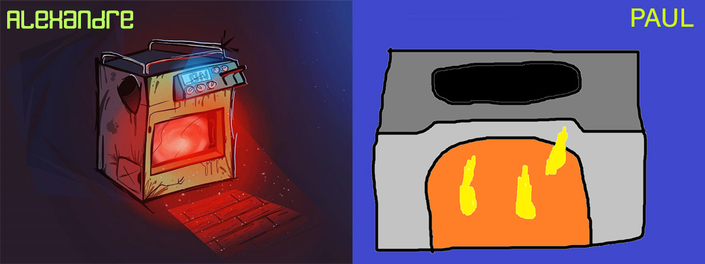

Création du RqndomBlog
I. Pourquoi ?
Tout simplement j'ai développé ce blog, pour mon projet de spé ISN (Informatique et sciences du numérique)II. Oui mais pourquoi un blog ?
Je pouvais choisir tout ce que je voulais, et j'ai pris un blog, car je n'avais pas d'autres idées, alors oui, j'aurais pû faire un site "pro"
c'est-à-dire un site pour une entreprise / j'invente une entreprise et j'en fais un site.
Blog, car j'ai une infinité de possibilités, je peux parler de tout et de rien.
III. Ok
Eh bien, oK BoOmEr !
Blague mise à part, ce blog parlera de "High-Tech", de "Santé", et du "Cosmos" (Petite catégorie surprise (hehehehehehe !) )
IV. Merci pour ces informations
Eh bien ! Pas de soucis, mais au lieu de me remercier, remerciez Alexandre FAURE pour son talent !
V. Tu n'aurais pas pû faire tout tout seul ?
Alors, euhhhh, tu as les magnifiques illustrations d'Alexandre, et tu as mon illustration...

VI. Je comprends mieux...
Qui es-tu pour me juger ? Pour finir cet article voici des statistiques pour la création de ce blog
Statistiques du blog
Temps passé à la création du blog ~ 23 heures
Temps passé à la rédaction des articles ~ 6 heures
Temps total ~ 30 heures et 30 minutes
Encore un merci à tous, pour avoir pris le temps de regarder mon blog, un grand merci à Alexandre, pour son autorisation à utiliser ses illustrations, à mes amis pour m'avoir aidé à designer le blog, et à GitHub pour m'avoir permis de faire mes tests, sur mon portable (mettre en ligne le site pour le tester n'aurait pas été possible autrement)